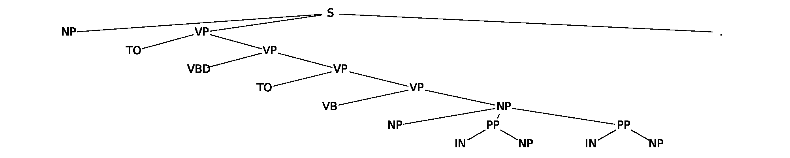
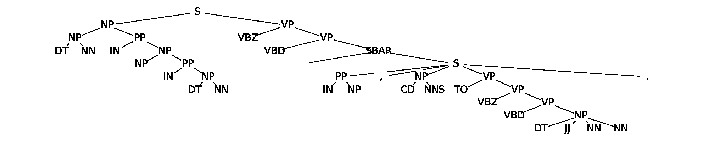

- Real sentences have deeply nested phrase structure
- The Penn TreeBank annotates English sentences with parse trees using ~28 non-terminal categories (NP, VP, PP, ...)
- Even short sentences have 4-5 levels of hierarchy; longer sentences can reach 8+
- Hierarchical depth grows with sentence complexity — not just length
Challenge: Can a model trained on flat token sequences reconstruct these hidden trees internally?
Short sentence (5 levels deep)

Longer sentence (7 levels deep)
